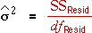

Estimating the error variance (variance of the experimental error)
In any experiment, it is important to obtain an estimate of the error variance, σ2, — the response variability that would occur in repeated runs with the same factor levels. The mean residual sum of squares provides the best estimate of σ2,

The mean residual sum of squares is used by all tests in the analysis of variance table.
If a factorial experiment involves factors with several levels, even a single replicate with all combinations of factor levels can involve many runs of the experiment. For example, if three factors each have 3 levels, there are 27 treatment combinations. It is often too expensive to conduct two replicates of the experiment.
If there is only one replicate, the full model with all interaction terms will fit the data perfectly with zero residuals and zero residual degrees of freedom. The error variance cannot be estimated for this model so it is not possible to test the significance of any terms.
Assumption of zero high-order interactions
The only way to test the significance of model terms is to assume that some high-order interactions are negligible. In an experiment with three factors it could be assumed that the 3-factor interaction is unimportant, making its sum of squares a measure of experimental variability. In other words, we would only consider models with 2-factor interactions so the 3-factor interaction sum of squares would be part of the residual sum of squares.
The assumption of no 3-factor interaction allows us to test all 2-factor interactions and main effects.
Decarburisation of steel
An experiment was carried out to investigate the effects of three different types of heat treatment on the decarburisation of steel. Two furnaces were used and four temperatures.
The full 3-factor model with all interactions fits the data exactly, so there are zero degrees of freedom for the residuals and we cannot test the significance of any terms in the model.
Click the checkbox for the 3-factor interaction to remove it from the model. This effectively changes the sum of squares and its degrees of freedom for this interaction into a residual sum of squares with 6 degrees of freedom.
With no 3-factor interaction, tests can be performed on all 2-factor interactions and the main effects.
Only temperature seems to have any influence on the mean decarburisation of the steel — no other main effects or interactions are significantly different from zero.